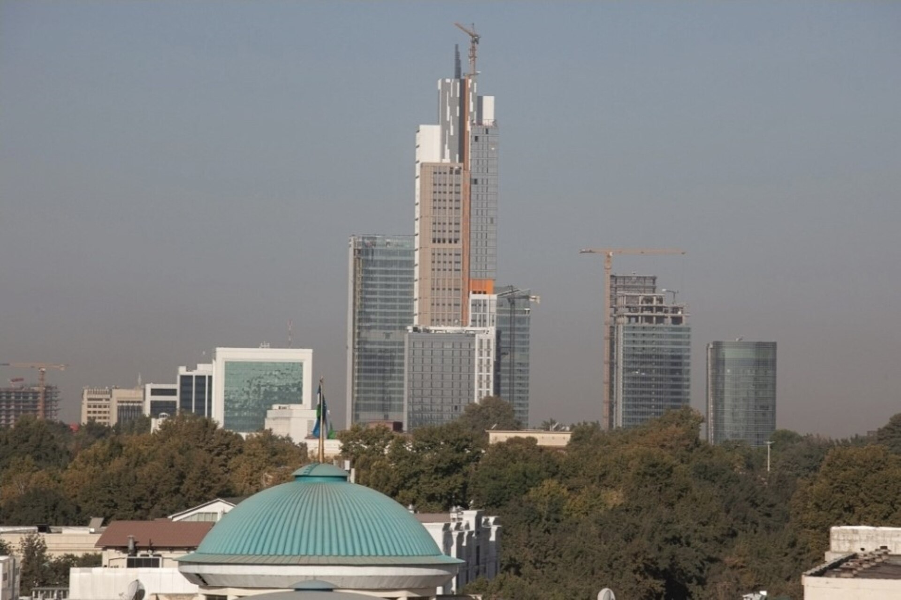

Саида Мирзиёева назначена управляющим Ташкентского международного финансового центра
Согласно указу президента, руководитель Администрации президента будет выполнять новую должность по совместительству. Центр работает в отдельном режиме на основе английского права, его запуск запланирован на 2027 год.

10 сентября 2026 года президент Узбекистана Шавкат Мирзиёев подписал указ о назначении руководителя Администрации президента Саиды Мирзиёевой управляющим Ташкентского международного финансового центра. Об этом сообщил пресс-секретарь президента Шерзод Асадов.
Назначение произведено по совместительству — то есть Саида Мирзиёева остаётся в должности руководителя Администрации президента и будет выполнять новую задачу параллельно.
Чем занимается управляющий
Согласно официальной информации, управляющий исполняет обязанности генерального секретаря Совета финансового центра. Он формирует повестку Совета и председательствует на заседаниях в отсутствие председателя.
- Исполнение обязанностей генерального секретаря Совета финансового центра
- Формирование повестки Совета, председательство на заседаниях
- Координация запуска центра
- Подготовка приоритетных документов, налаживание межведомственного взаимодействия
- Представление центра перед международными организациями, инвесторами и партнёрами
- Участие в кадровых вопросах, в том числе назначение исполнительного директора
- Заключение договоров и создание рабочих групп
Одна из основных задач управляющего — координация запуска центра. Это включает подготовку приоритетных документов и организацию взаимодействия между государственными ведомствами и структурами центра.
Управляющий представляет центр внутри страны и за её пределами перед международными организациями, инвесторами и партнёрами. Ему предоставлены полномочия по участию в кадровых вопросах — в том числе по назначению исполнительного директора центра, заключению договоров и созданию рабочих групп.
Что такое центр
Ташкентский международный финансовый центр был создан указом президента № 48, подписанным 31 марта 2026 года. А в июле Олий Мажлис принял конституционный закон о центре.
Конституционный закон устанавливает для центра отдельный правовой режим: коммерческие споры в его рамках рассматриваются по системе, основанной на английском праве. Такая модель схожа с опытом Дубайского международного финансового центра и Международного финансового центра «Астана».
Налоговые льготы для компаний, работающих в центре, действуют до 2076 года — то есть рассчитаны на пятидесятилетний срок. Полный запуск центра запланирован на 2027 год.
В цифрах
- Дата назначения: 10 сентября 2026 года
- Указ о создании центра: 31 марта 2026 года, № 48
- Конституционный закон: июль 2026 года
- Срок налоговых льгот: до 2076 года
- Планируемый запуск: 2027 год
- Правовая модель: система на основе английского права
Кто такая Саида Мирзиёева
Саиде Мирзиёевой 41 год. С 2025 года она работает в должности руководителя Администрации президента. Вместе с тем она является заместителем председателя Совета безопасности.
До этого она курировала в Администрации президента направление информационной политики и массовых коммуникаций, работала в Агентстве информации и массовых коммуникаций. Саида Мирзиёева — старшая дочь президента Шавката Мирзиёева.
Конкуренция с Астаной
Первый проект по модели международного финансового центра в Центральной Азии — Международный финансовый центр «Астана» (МФЦА) — был запущен в 2018 году. Он также располагает отдельной судебной системой на основе английского общего права и работает в режиме, отделённом от законодательства Казахстана.
Ташкентский проект повторяет эту модель и станет вторым таким центром в регионе. Официальная цель — привлечь в страну международные финансовые компании, управляющие фонды и юридические фирмы.
Экономический фон
Назначение пришлось на этап крупных экономических реформ в Узбекистане. Указом, подписанным 28 августа, установлено, что до 2028 года государственные доли в 62 компаниях будут выставлены на аукцион; общая стоимость выставляемых на продажу активов оценена в 100 трлн сумов.
Правительство объявило на 2026 год цели: экономический рост 6,6 процента, увеличение ВВП свыше 150 млрд долларов и удержание инфляции ниже 7 процентов. Золотовалютные резервы за год выросли на 35 процентов и достигли 55 млрд долларов.
Узбекистан официально поставил целью получение кредитного рейтинга инвестиционного уровня. Проект международного финансового центра представляется как составная часть этой задачи.
Как работает модель международного финансового центра
Международные финансовые центры — это специальные зоны, созданные на территории государства, но частично отделённые от общего правового и налогового режима страны. Их цель — создать привычную правовую среду для привлечения иностранных банков, страховых компаний, управляющих фондов и юридических фирм.
Такие центры обычно опираются на три элемента: отдельный коммерческий суд или арбитражный центр, независимый финансовый регулятор и долгосрочные налоговые льготы. В ташкентском проекте предусмотрены все три элемента — судебная система основывается на английском праве, а налоговые льготы установлены до 2076 года.
Наиболее известные образцы этой модели — Дубайский международный финансовый центр (2004), Финансовый центр Катара (2005), Глобальный рынок Абу-Даби (2015) и Международный финансовый центр «Астана» (2018). Все они используют судебную систему на основе английского общего права.
Почему английское право
Международные инвесторы и банки обычно оформляют крупные сделки по английскому или нью-йоркскому праву. В этих правовых системах практика по корпоративным договорам, залогам и разрешению споров складывалась долгие годы и считается предсказуемой.
Разрешение споров через национальную судебную систему оценивается иностранным инвестором как дополнительный риск. Поэтому введение отдельного режима рассматривается как инструмент привлечения инвестиций.
Этапы проекта
Первым официальным документом по центру стал указ президента № 48, подписанный 31 марта. В июле Олий Мажлис принял конституционный закон; закон такого статуса стоит выше обычных законов, и его изменение осуществляется в более сложном порядке.
Назначение 10 сентября — очередной шаг на организационном этапе проекта. Должность управляющего введена для координации процесса запуска центра.
Контекст города Ташкента
Центр обсуждается в связи с новым деловым районом под названием «Ташкент-Сити». Это многофункциональный комплекс, строящийся в центре столицы, в котором расположены офисные здания, гостиницы и жилые комплексы.
При этом официальной информации о точном адресе и инфраструктуре центра не обнародовано. Ожидается, что решения по вопросам недвижимости будут определены в последующих документах.
Открытые вопросы
В официальных сообщениях не указано, кто будет исполнительным директором центра, каков состав Совета и кто является его председателем. Подробной информации о том, где физически разместится центр и как он будет финансироваться, также не приводится.
Вопрос о том, как будет сформирована судебная система в рамках центра — откуда будут привлекаться судьи и как решения будут согласовываться с судебной системой Узбекистана, — также, как ожидается, будет определён отдельными документами.
Запуск центра запланирован на 2027 год; точная дата не объявлена.